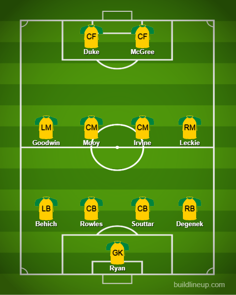
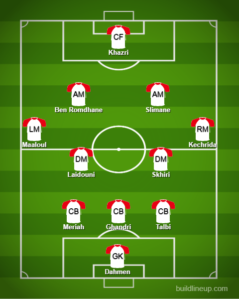

Day 11
Final Matchday in Groups C and D
Group D
Australia v Denmark and Tunisia v France

2 surprise results but only one of them mattered and that was Australia v Denmark. I never realized how bad they were and the fact that Australia managed to get into the Round of 16. Denmark lost twice and never won once. I never realized how bad they look without a proper ST like Poulsen. At least Eriksen is getting a longer rest before the next Man United game. Denmark better use a better ST than the ones they used because they were shambolic. Tunisia got an amazing result but France was resting all their key players and was not in the game.
Match 1
The first time Australia has qualified for the Round of 16 since 2006. It is an absolutely amazing achievement and they deserve it with how lackluster Denmark was. Leckie scored the lone goal of the game after a great counter-attack and he managed to get past 2 defenders and slotted the ball really well past Schmeichel. Apart from that, I don’t have anything left to say apart from the fact of how SHAMBOLIC Denmark is in attack. The likes of Skov Olsen, Cornelius, Braithwaite and so on are so lackluster in their finishing. They are creating so many chances thanks to Eriksen and they are just letting him down. Eriksen went through hell and back for you lot and this is how you repay him? Just pathetic is all I can say about Denmark’s finishing.
Australia

Denmark
Match 2
TUNISIA STUNS THE WORLD CHAMPIONS. On a serious level though France was taking it easy and it showed from the get-go. Tunisia meant business from the start and really dominated France who rested quite literally everybody. The goal came from the legend of Tunisia Wahbi Khazri who managed to make his mark in this tournament. As someone who knows only 2 players in this Tunisia side and one of them hardly plays it was nice seeing him score. The goal itself was not a bad one. Just casually dribbling past many people and beating Varane with a quick shift and just tapping it past Mandanda. You know the one. France thought they came back via Griezmann who was brought on but it was ruled out for offside.
Tunisia

France
Group D table
I AM ASHAMED OF YOU DENMARK. ASHAMED I SAY
Group C
Poland v Argentina and Saudi Arabia v Mexico
The first game was dominated by Argentina so that was a no-brainer but the second game decided so much. Mexico and Poland’s fate were in the balance for the second game and Mexico were knocked out via a goal from Saudi Arabia which meant they went out on goal difference. They were going home anyways because of more yellow cards if that goal had not been scored. They just switched off defensively and let in a goal by Saudi. This now means Poland and Argentina are through and the Round of 16 matches are France v Poland and Argentina v Australia.
Match 3
From River Plate to the World Cup. An unwanted Messi record and Lewandowski survives
Really dominant from Argentina. Poland tried to sit back deep and hold them but they found the gaps really well and managed to constantly get shots away. The first chance was a penalty which I’ll be honest was very soft because the keeper when saving hit Messi’s face it really wasn’t a big hit at all but it was given anyways(The keeper said he had a bet with Messi that a penalty will not be given by VAR which was just brushed off by Messi when it actually was given 😅) and Messi wound up having his penalty saved and with that, he has become the first player to have 2 penalties saved in the World Cup. Argentina didn’t stay down for long as they had a blistering start to the second half with a great cross by Molina bundled in by Mac Allister(from bloody Brighton 😂). The second was scored by Alvarez with a beautifully curled effort past the keeper. The first sentence was written because both Enzo Fernandez and Alvarez had started and they were winning things with River Plate in Argentina and are now on the big stage of the World Cup playing alongside Messi. Lewandowski is not too fussed about the result after seeing what happened in the other game
Poland
Argentina
Match 4
Saudi Arabia
Mexico
Chavez becomes this World Cup’s Forlan. The minimum margins that didn’t matter. Mexican complacency and arrogance.
🎵Let me sing a Kutty Story, pay attention, listen to me 🎵 There was a ball all the way back in 2010 known as the Jabulani and it was notorious and had a load of complaints from goalkeepers for being highly unpredictable but it was actually mastered by one person alone and that person was….Diego Forlan. He was called the best player of the tournament and scored 5 goals including a cracking free kick against Ghana(Had an infamous situationnnnnn as well 👀). And people around him said he trained relentlessly to get used to the ball and he used it well.
So with that in mind, it seems like Chavez from Mexico seems to have a handle on this World Cup’s ball which is lighter and is actually discouraging players to take shots from range because a little power could be enough to send the ball flying into Row Z. Chavez had 2 freekicks and both were on target and one of em was a goal which was just beautifully struck. Just slightly below the absolute top corner but amazing nonetheless. The second was for the left corner but it was saved well. The first goal was a simple flick from a corner bundled in by Martin who was alert. Technically with this scoreline, they had a chance to go through but they had more yellow cards so which meant Poland will go through so they pushed really hard for a third and got one but were ruled out for offside by VAR.
Mexico got complacent and was weak towards the end of added time and Saudi had a chance and took it. With the lack of defenders, he easily got past and slotted it home. This meant with Poland’s loss Mexico was eliminated on goal difference anyways. And now we say goodbye to a World Cup legend: Memo Ochoa, the goalkeeper for the big stage and the big stage alone